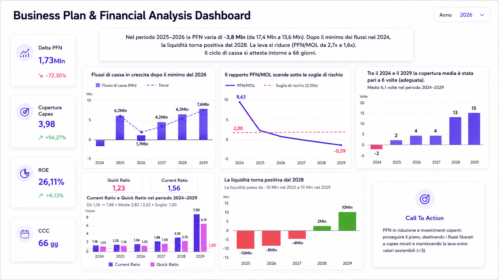

Misaligned formats and codes
The same customer, product, or department may be identified using different codes and formats, making comparisons, aggregations, and connections between sources more complex.
Data Modeling & Integration
I organize, standardize, and connect data from different sources to create a consistent, controllable foundation ready to support reports, KPIs, and analysis over time.

Example of an integrated data model
The problem starts upstream
Excel files, business management systems, CRMs, and databases often use different formats, codes, and rules. Without a shared structure, the same data can produce inconsistent results that are difficult to verify and complex to maintain over time.
The same customer, product, or department may be identified using different codes and formats, making comparisons, aggregations, and connections between sources more complex.
Duplicate records, incomplete fields, and invalid values compromise analysis quality and require continuous manual checks.
Non-unique keys and fragile connections can produce duplicates, missing rows, and inconsistent results.
When each report applies its own transformations and classifications, the same data can produce different results that are difficult to reconcile.
The quality of the analysis depends on the quality of the structure supporting it.
A reliable foundation
The model is designed to make relationships, rules, and transformations explicit, so every analysis uses a shared, verifiable foundation that is easier to maintain.
Tables, keys, and cardinalities are defined to connect entities correctly and avoid duplicates or ambiguous results.
Formats, codes, and classifications are standardized so that data from different systems carries the same meaning.
Data cleaning, mapping, and calculation logic are centralized in traceable steps, avoiding duplicated and inconsistent transformations across individual reports.
Validation rules and consistency checks help detect anomalies, duplicates, and missing values before they reach the analysis stage.
A streamlined structure with optimized relationships and transformations reduces complexity and improves refresh and query times.
New sources, tables, attributes, and information requirements can be integrated without rebuilding everything from scratch.
What we can integrate
Files, business systems, databases, and cloud services are connected within a consistent, reliable structure ready for analysis.
Area 01
Operational files, price lists, and CSV archives can be imported, standardized, and consolidated, reducing manual copying and misaligned versions.
Area 02
Master data, orders, items, and transactions can be extracted through available databases, connectors, or structured exports.
Area 03
Leads, opportunities, activities, and commercial records can be integrated while keeping identifiers, statuses, and relationships consistent.
Area 04
Tables and views from relational databases can be connected and modeled to support reliable, refreshable analysis.
Area 05
Files and data hosted on cloud platforms can be integrated using methods compatible with access permissions, connectors, and refresh frequencies.
Area 06
APIs, proprietary exports, and specific formats can be assessed and mapped when technically compatible access methods are available.
What the service includes
The project includes the activities required to connect sources, make rules explicit, and build a data structure that is understandable, verifiable, and easy to evolve.
Assessment of the structure, availability, quality, and refresh frequency of the sources involved.
Alignment of names, codes, keys, and meanings across equivalent fields from different systems.
Standardization of dates, numbers, text, categories, and conventions to make data comparable and reusable.
Removal or controlled management of duplicate records, missing values, and anomalies that compromise analysis reliability.
Definition of keys, cardinalities, and connections between entities to accurately represent the business process.
Design of tables, relationships, hierarchies, and calculation logic within a consistent, efficient, and scalable structure.
Implementation of completeness, uniqueness, consistency, and validity checks to make potential anomalies easier to identify.
Documentation of key fields, relationships, and rules, with initial support for managing and evolving the solution.
Why a tailored approach
Two companies may use the same tools while organizing master data, codes, and processes in completely different ways. That is why the model is built around the actual data structure and the rules governing how data must be connected and interpreted.
The result is not simply having more connected data: it is having a structure that makes it usable and verifiable.
The model represents the entities, steps, and relationships actually used by the company, without forcing the data into a generic framework.
Fields, transformations, and controls are documented to make data origins understandable and every applied rule verifiable.
New sources and information requirements can be integrated over time without compromising the existing structure.
The right solution
The service delivers value when data from different sources must be connected, standardized, and made reliable before feeding reports, KPIs, or Business Intelligence tools.
Not sure whether this is the right solution? During our initial consultation, we will assess your sources, data quality, and existing connections to determine whether the data model, integration layer, or another stage of the information process needs attention.
Frequently asked questions
Answers to the most common questions about source integration, data quality, and the design of a reliable model.
Excel and CSV files, business management systems, CRMs, databases, cloud platforms, APIs, and structured exports can be integrated. Feasibility depends on access methods, available formats, and the technical constraints of each source.
Not necessarily. When the system provides databases, APIs, connectors, or structured exports, integration can be implemented without modifying the software. Any changes are considered only when essential.
Yes. Excel files can be used as data sources, provided their structure is sufficiently stable and controllable. When necessary, they are reorganized, standardized, and validated before integration.
Duplicates and missing values are analyzed to determine their origin, impact, and handling rules. Depending on the case, they may be removed, consolidated, flagged, or retained according to documented criteria.
Yes. The model can be designed to accommodate new sources, tables, attributes, and rules without compromising consistency. Expansion is managed while keeping connections, dependencies, and performance under control.
No. The service focuses on data structure and integration and can support Power BI, other Business Intelligence tools, or specific reporting processes. The technology is selected according to the environment and project objectives.
Would you like to see some completed projects? View selected projects →
Start with the foundations
If your data is currently spread across Excel files, business systems, databases, and different platforms, we can organize it into a consistent, verifiable structure ready to support reports, KPIs, and analysis with greater reliability.
Together, we will assess your current sources, formats, data quality, and connections to identify the data structure best suited to your context.